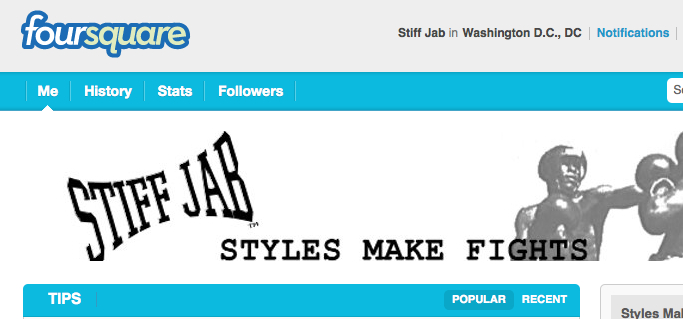

Stiff Jab is on Foursquare:

While our esteemed editor has been a mainstay on location-based social networks since discovering Brightkite back in 2007, the rest of us have been a bit slower to adapt. No longer.
You can now friend us on Foursquare and get tips, insights and pics when you check into boxing venues on the East Coast. It will take us a little while to get everything straightened out, but rumor has it there may or may not be a boxing badge available to fight fans that manage to make the rounds.